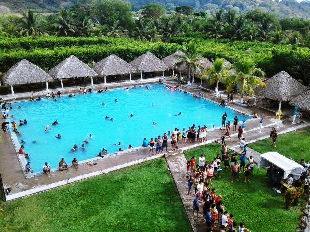

Los parques acuáticos de El Salvador son lugares públicos de carácter gubernamental o privado que sirven como una opción turística para las personas que desean disfrutar de un ambiente relajante cerca de la ciudad sin ir más lejos a las playas, aunque hay algunos que se ubican en la zona costera del país.
La mayoría de los parques acuáticos, también conocidos como turicentros, cuentan con piscinas de diversas clases para que los visitantes puedan refrescarse con sus cálidas aguas, en estas piscinas algunas veces encontrarás toboganes y juegos acuáticos para que chicos y grandes puedan disfrutar de una aventura inolvidable. Por lo general hay un costo de entrada que varía, y en ellos se permite el ingreso de alimentos o también se puede comprar comida dentro de los parques acuáticos o a sus alrededores, para degustar de un exquisito almuerzo. No se permite el ingreso de bebidas alcohólicas, por la seguridad de todos los visitantes. Casi todos tienen un horario de atención al público, que empieza a las 8 de la mañana y termina a las cuatro de la tarde.
Es posible también encontrar elementos de seguridad en el interior de los parques acuáticos, como guardias privados, policías o soldados, que se encargan de mantener el orden y la seguridad dentro de ellos. Algunas de las opciones que se pueden encontrar para complementar tu estadía en un parque acuático es el alquiler de hamacas, mesas o sillas, parrillas, entre otras cosas. La mayoría permite que puedas cocinar dentro de sus instalaciones, por si deseas preparar tu propia comida Las épocas de año en que son más visitados los parques acuáticos son el 1 de enero, Semana Santa, vacaciones agostinas (1-6 de agosto), 25 de diciembre, y casi siempre en todos los días festivos con asueto.
|
|
|
|---|---|---|
| Altos de la cueva | Amapulapa | Atlantis |
|
 | |
| Entre rios | ichanmichen | manantiales-de-jiboa |
|
||
| Termos del Rio |